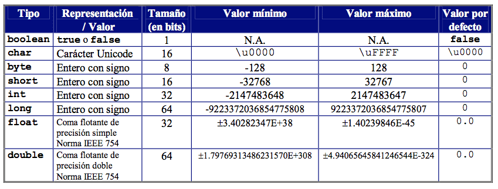

Tipos de Datos Simples y Compuestos
Bienvenido a esta primera seccion del curso JavaFacilito! Este sera el inicio de este hermoso camino para convertirte en un gran java developer. Aqui conoceras los conceptos fundamentales, los cuales formaran bases solidas que te ayudaran a manipular los datos de los programas que desarrolles en un futuro.
Esperamos que te diviertas, ¡bienvenido!
¿Que es un dato?
Antes de comenzar, es muy importante conococer que son los datos en la programación, en pocas palabras estos datos son informacion, esta informacion la puedes guardar en algo llamado "variables", estas variables te serviran para poder guardar y manejar dicha informacion. Entonces para poder entender de manera sencilla que es una variable lo explicaremos de la siguiente manera.
Imagina que tienes una caja con una etiqueta, esta etiqueta describe lo que hay en dicha caja, y dentro de cada caja puedes meter algo, en el caso de la programacion, ese "algo", son cosas como: numeros, palabras, valores de verdadero o falso, entre otras.
Eso que has metido y que hay dentro de la caja, es el dato, y el nombre de la caja o la etiqueta es la variable. Recuerda, en programacion un dato es cualquier informacion que pueda ser procesada por una computadora.
Ejemplos
- edad = 27
- nombre = john doe
- mayor_edad = true
- lista_mercado = ["pan,"leche,"arroz"]
Dentro de la programacion existen tipos de datos. Estos tipos indican que clase de información se esta mandejando. Asi el programa sabra como tratar el dato.
Datos Simples
Los datos simples son los tipos de datos mas basicos. En un contexto mas cotidiano son el equivalente a las piesas mas pequeñas de un LEGO, piesas las cuales se usan para construir cosas mas grandes
Características:
- Solo almacenana un valor
- Son rápidos y ocupan poca memoria
- No tienen funcionalidades adicionales (métodos)
- son usados para hacer operaciones sipmles como sumar, comparar, contar, etc.
Ahora que ya sabes que son los datos simples, podremos mencionar los que hay en Java
Datos simples en Java
Comencemos por los numeros, los datos que puedes usar para manejar nuemeros son los siguietenes:
- byte:
- Tamaño: 8 bits
- Rango: -128 a 127
- Uso: Ideal para ahorrar memoria cuando sabes que vas a trabajar con valores pequeños
- short:
- Tamaño: 16 bits
- Rango: -32.768 a 32.767
- Uso: Ideal para ahorrar calculos de bajo consumo, donde no se necesita mucha precision
- int:
- Tamaño: 32 bits
- Rango: -2.147.483.648 a 2.147.483.647
- Uso: Ideal para valores numericos relativamente grandes, operaciones basicos, o numeros por defecto como IDs
- long:
- Tamaño: 64 bits
- Rango: -9.223.372.036.854.775.808 a 9.223.372.036.854.775.807/li>
- Uso: Ideal para numeros enormes
- float:
- Tamaño: 32 bits
- Precision: 6-7 digitos decimales
- Uso: Decimales rápidos con menor precisión
- double:
- Tamaño: 64 bits
- Precision: 15 digitos decimales
- Uso: Decimales de alta precision como calculos financieros, cientificos o estadistica
Ademas de los numeros, tambien existen tipos para representar valores booleanos (valores de verdadero o falso)
- char:
- Tamaño: 16 bits
- ¿Que es?: simplemente un caracter, un simbolo
- Sirve: Para manejar letras individuales, como iniciales o simbolos
- boolean:
- Tamaño: 1 bit
- ¿Que es?: La representacion de un valor logico (true o false)
- Sirve: Para tomar decisiones, condiciones, verificaciones, etc.
Acontinuacion podras ver una tabla con todos los valores de cada tipo de numero

Implementacion en Java

Datos compuestos
Los datos compuestos, son estructuras que agrupan varios valores, pueden incluir tipos primitivos y objetos. No estan definidos como "Primitivas" en Java, pero se les llama "compuestas" porque contienen varios Datos. En palabras del ejemplo anterior, los datos compuestos son como las cajas mas grandes, las cuales pueden guardar varios datos simples juntos, son como el LEGO grande hecho para varias piezas.
Características:
- Agrupan multiples valores (a veces de distintos tipos)
- Son objetos (tienen metodos y propiedades)
- No tienen funcionalidades adicionales (métodos)
Datos compuestos en Java
- String:
- ¿Que es?: Una secuencia de caracteres
- Sirve: Para guardar nombres, mensajes, frases, textos largos o pequeños
- Algunos metodos: .length(), .toUpperCase(), .substring()
- Array (arreglo):
- ¿Que es?: Una coleccion ordenada de valores del mismo tipo, con tamaño fijo.
- Sirve: Para guardar listas de elementos, como notas, edades, nombres
- Su tamaño no cambia una vez creado
- Tiene indice (posicion)
- ArrayList(lista dinamica):
- ¿Que es?: Una lista similar al array, pero mas flexible ya que puedes agregar o quitar elementos.
- Sirve: Cuando no sabes cuantos elementos vas a tener
- Metodos utiles: .add(), .remove(), .get(), .size()
- HashMap:
- ¿Que es?: Estructura que guarda pares clave-valor
- Sirve: guardar cosas con etiquetas como telefono de contactos o configuraciones.
- puedes acceder por clave: edades.get(nombre) -> contenido
Acontinuacion veras la implementacion en sintaxis de java